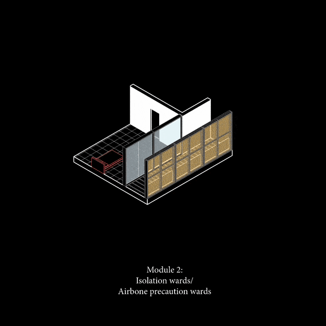

Outpacing Panic! and Pandemic –
An Architectural Prototype
for Resilient Buildings
Prepared for Outbreaks
An Architectural Prototype
for Resilient Buildings
Prepared for Outbreaks
Summary
Diseases have impacted the built environment in many ways, whether it is through the planning of cities or the design of new building types. In the past, many of these were targeted only at specific problems brought forth by the particular disease of that period. This often led to the abandonment or renovation of properties after the disease has died down. The thesis aims to look into resilient architectural solutions by proposing a new building typology with flexible inhabitable spaces that grows with the people and the changing environment.Three main changes observed particularly during a pandemic were looked into, namely, hospital organisation, ventilation and comfort of occupants and visitors. Firstly, an on-off switch system would be employed to vary both environmental and spatial conditions during a pandemic when more space is required and in normal conditions respectively. Existing hospital workflow and circulation were then analysed and made reference to other examples for greater ease of access and increased observation on patients. Hospitals typically have slab block typology and are oriented away from the East-West sun, in favour of the predominant wind direction. These static buildings have limited performance all year round, with its linear circulation compromising direct access to patients.
Hence, the thesis proposes the use of cylindrical massing coupled with responsive façades activated by an on-off switch system to obtain optimal and resilient building performance prepared for varying present and future conditions.
About Me
I am Mavis, a Master of Architecture graduand from Singapore University of Technology and Design (SUTD). My thesis revolves around the woes and intricacies of the pandemic, building on the need for static buildings to be responsive to current events and the environment.The designs for buildings in pre, present, and post-pandemic conditions are constantly changing, and architecture can no longer exist in a singular state of matter.
My research and design interests lie at the nexus of understanding the changing urban environment and reconnecting them with the people - appreciating transience and reconciling them with Architecture.
Name
Mavis Lee
Mentor
Thomas Schroepfer
Typology
Hospital, Mixed-Use
Site Location
Singapore

![]()
![]()
![]()
![]()


Layout for acute-care wards
During the OFF condition, the acute care ward will comprise of glass panels, shutters and louvres. This module is then deconstructed during an ON phase, with the glass panels now acting as physical barriers when shifted into the interior space, minimising spread through droplets.

Layout for isolation, icu, hdu wards
The module for isolation wards comprise of glass panels, glass doors and louvres. During the ON condition, the panels and door will be placed between the two patients sharing the same ward, with glass balustrades being used to allow wind to enter.Layout for research labs
Lastly, the module for research labs will comprise of just the glass balustrades and louvres, with the glass panels forming a balcony during the OFF condition. These glass panels are then repositioned within the interior space to form physical barriers between staffs. As they are located on higher floors, lengthening and tilting the extended shutters will help to lower air velocity and pressure without compromising on the airflow.